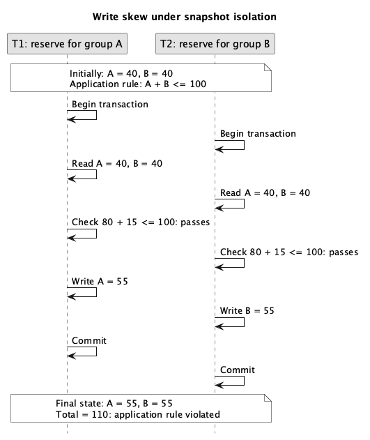

Traditionally, because strict adherence to the ACID semantics can be expensive, database systems provide a range of isolation models, trading off weaker consistency/isolation guarantees for performance.
Three isolation models are supported in WiredTiger, from weaker to stronger:
read-uncommitted: Transactions can see changes made by other transactions before those transactions are committed. Dirty reads, non-repeatable reads and phantoms are possible.read-committed: Transactions cannot see changes made by other transactions before those transactions are committed. Dirty reads are not possible; non-repeatable reads and phantoms are possible. Committed changes from concurrent transactions become visible periodically during the lifecycle of the transaction.snapshot: Transactions read the versions of records committed before the transaction started. Dirty reads and non-repeatable reads are not possible; phantoms are possible. Snapshot isolation is the default isolation level, and all updates must be done using snapshot isolation.Under snapshot isolation, each transaction reads a consistent snapshot that excludes changes made by concurrent transactions. Write skew is an anomaly in which concurrent transactions each make decisions using data that the other transaction changes, but update different records. Both may commit because their writes do not conflict, even when their combined changes violate an application rule. The resulting outcome may be impossible if the transactions were executed one after another. Serializable isolation guarantees behavior equivalent to some serial ordering of the transactions, but WiredTiger does not support that isolation level.
For example, an application stores reservation counts for groups A and B in two separate records. Each transaction attempts to add 15 reservations to its group after checking that the combined total would not exceed 100. The diagram below shows both transactions running under snapshot isolation, with time flowing downward.

Both transactions see the original total of 80 in their snapshots, so each check passes: adding 15 would give a total of 95. T1 updates only A and T2 updates only B, so their writes do not conflict and both may commit. The final total is 110, violating the application rule even though each transaction's check passed.
If these transactions ran one after another, the first would increase the total to 95. The second would then read that total and reject its addition, because 95 + 15 exceeds 100. Neither serial ordering would produce a total of 110. This difference illustrates why snapshot isolation does not guarantee serializable behavior.